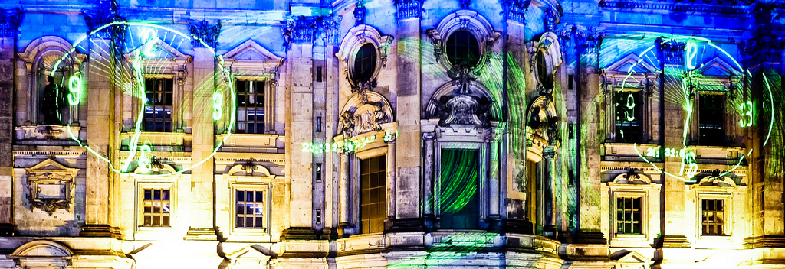

{% extends "C:/Users/therrmann/Desktop/Eigene_Datei/Martin/Schule/Master/3._Semester_19.10/Interaktive_Geoemdiengestaltung/Projekt/geomedi/templates/index.html" %} {% block content %}
Festival of Lights Berlin 2018

Salomao Nunes
{% endblock %}